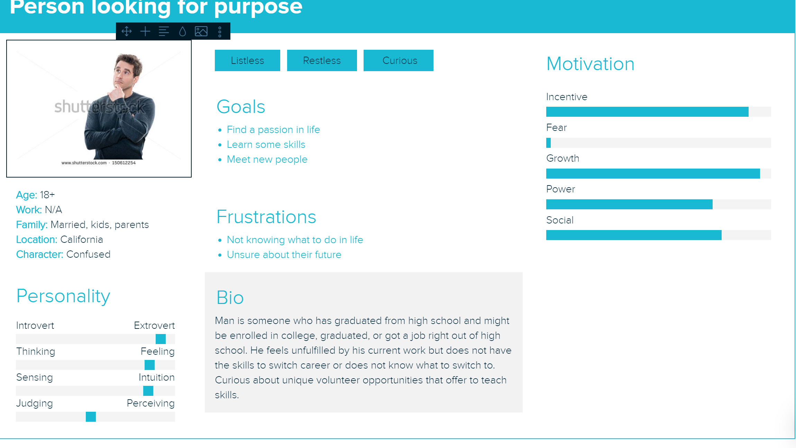
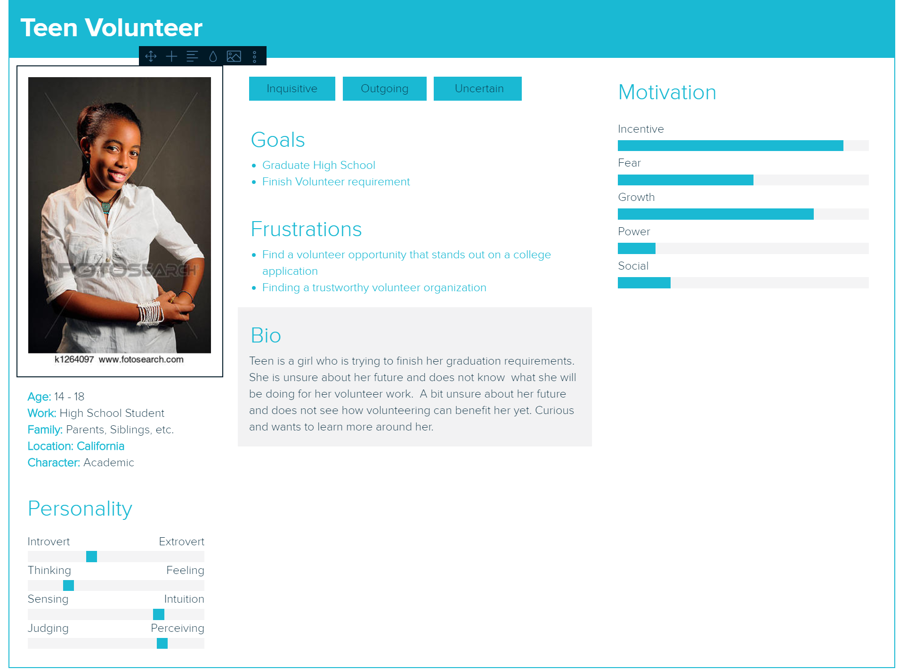

Several articles I read talk about reasons why people volunteer as an adult. I think it has something to do with feeling like they want to do something meaningful. Some people want to meet others with similar ideals or opinions. And some want to learn new skills, a tedTalk I watched talked about how they will sometimes teach you on the spot skills to help volunteer. I hope my website will help people find the oppurtunities that interest them the most.
Interaction Design Comparative Research


In high school, I had to complete 40 hours of volunteer work. At first I felt it was a hassle and just wanted it over with. But As I did a few hours of work, I realize that it was interesting getting to help with events and interacting with different people. I knew several people that selectively picked volunteer positions that stood out on an applicaton, something similar to what they want to do in the future. I think my final project could be useful to teenagers looking for unique volunteer events to make their college application stand out.